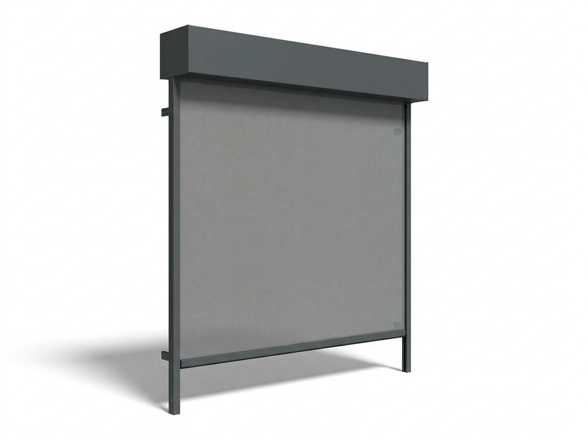
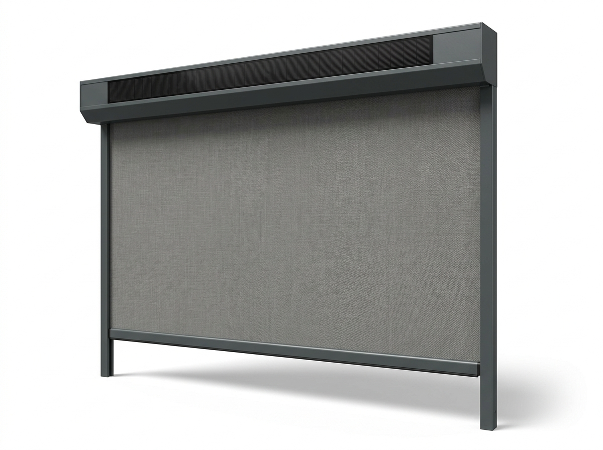
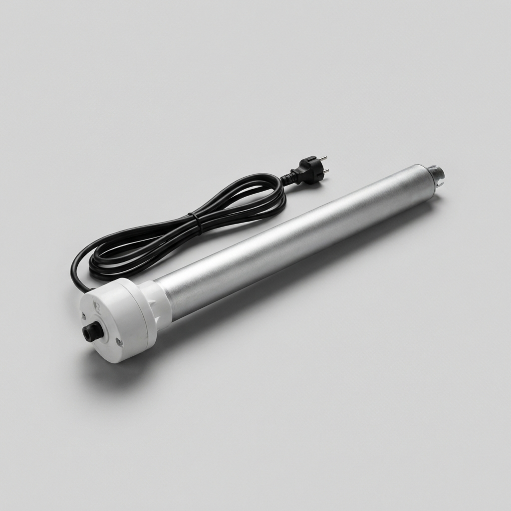
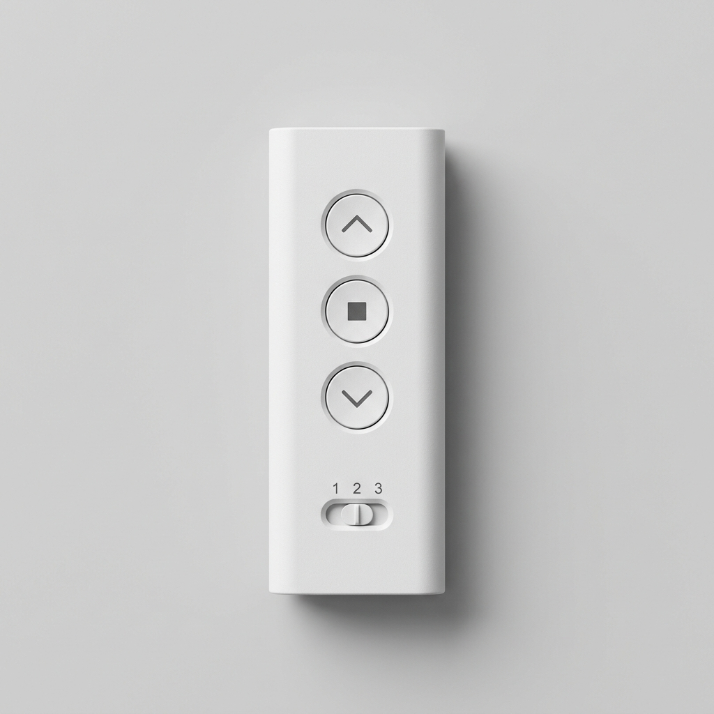
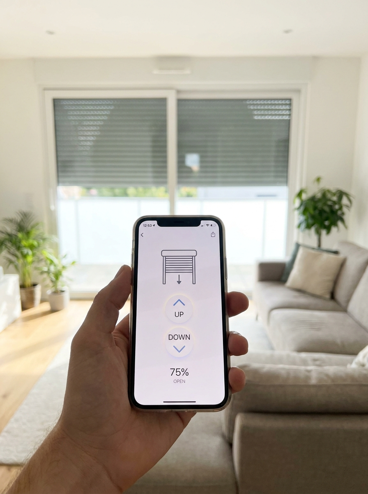

Lucky Zonwering maakt screens en ritsscreens (zip-screens) op maat en plaatst ze met eigen monteurs in heel Noord-Brabant. Buitenzonwering vóór het glas houdt de hitte buiten, geeft privacy en blijft windvast door de ritsgeleiding — vakwerk sinds 1975, gratis advies aan huis en beoordeeld met een 5,0 op Google uit 124 reviews.
Wie veel glas in huis heeft, merkt de warme Brabantse zomers als eerste. Grote raampartijen, serres en woonkamers op het zuiden lopen snel op in temperatuur. Een screen is hét antwoord: dit strakke doekscherm hangt aan de buitenzijde vóór het raam en weert de zonwarmte vóór die het glas raakt. Daardoor kan een screen uw woning tot zo'n 10°C koeler houden, terwijl u uw uitzicht behoudt en de airco minder hard hoeft te draaien.
Als familiebedrijf maken wij sinds 1975 maatwerk uit eigen huis. Doordat wij de screens zelf op maat samenstellen én met onze eigen monteurs plaatsen, heeft u maar één aanspreekpunt: van het gratis inmeten tot de oplevering en de service daarna. Hieronder leest u alles over screens en ritsscreens op maat.
Van een voordelig standaard screen tot een windvast ritsscreen met zonwerend solar-doek — alles op maat gemaakt en in de kleur van uw keuze.

Voordelige verticale zonwering vóór het raam, ideaal voor kleinere ramen.
Offerte aanvragen
Doek vast in de ritsgeleiding: extra windvast en zonder kieren, perfect voor grote raampartijen.
Offerte aanvragen
Transparant zonwerend doek dat hitte en fel licht weert met behoud van uitzicht.
Offerte aanvragenScreens van Lucky Zonwering zijn een slimme investering die uw woongenot verhoogt en uw energierekening verlaagt. Dit zijn de belangrijkste voordelen:
Doordat het doek aan de buitenzijde hangt, wordt de zonwarmte tegengehouden vóór die het glas raakt. Dat is veel effectiever dan binnenzonwering en houdt uw woning tot zo'n 10°C koeler op hete dagen.
Een koeler huis betekent dat uw airco minder hard hoeft te werken — en in de winter houdt het doek juist warmte binnen. Zo dragen screens het hele jaar bij aan een lagere energierekening.
Het transparante solar-doek beperkt overdag het inkijk van buitenaf, terwijl u van binnen gewoon naar buiten blijft kijken. Zo zit u beschut én houdt u zicht op uw tuin en straat.
Anders dan een rolluik dat het raam volledig dichtmaakt, houdt een screen het felle zonlicht tegen maar laat het daglicht en uw uitzicht grotendeels intact. Uw kamer blijft licht en aangenaam.
Bij een ritsscreen zit het doek vast in de zijgeleiders, zodat het strak en windvast blijft en niet kan klapperen of uitwaaien — ook bij grote ramen en serres.
Een gesloten ritsscreen sluit het raam aan alle zijden af en houdt zo ook insecten grotendeels buiten. Voor volledige insectenwering combineert u screens met onze horren op maat.
Benieuwd naar de mogelijkheden en een richtprijs? Stel online uw zonwering op maat samen of vraag direct een gratis offerte aan.
De openheidsfactor van het doek bepaalt hoeveel u doorkijkt en hoeveel warmte u tegenhoudt. Een open, transparant solar-doek weert hitte en fel licht met maximaal uitzicht en privacy overdag. Een dichter doek geeft meer schaduw en privacy, en voor de slaapkamer is er optioneel een verduisterend doek. Tijdens het gratis advies aan huis adviseren wij u over de juiste transparantie voor elke ruimte.

Buitenzonwering houdt de zonwarmte tegen vóór die naar binnen komt. Daardoor blijft uw woning merkbaar koeler en hoeft de airco minder hard te werken — goed voor uw comfort én uw energierekening. In combinatie met een zonsensor lopen de screens automatisch in en uit op de juiste momenten.

Onze screens worden uitgevoerd in onderhoudsarm aluminium, met een ruime keuze aan doek- en cassettekleuren. Dit zijn de meest gekozen varianten — passend bij elke gevel en kozijn.
Screens van Lucky Zonwering bedient u moeiteloos. Kies de aandrijving en besturing die bij u past — wij stellen alles voor u in.

Een stille motor laat het doek soepel zakken. Optioneel met zonne-aandrijving, zonder bekabeling.

Bedien uw screens met een handzender of wandschakelaar — afzonderlijk of allemaal tegelijk.

Stuur uw screens via een app op uw telefoon en laat ze met een zonsensor automatisch in- en uitlopen.
Screens laten plaatsen moet vooral ontzorgen. Daarom regelen wij alles uit één hand, in heldere stappen:
Wij komen vrijblijvend bij u langs in Oss of elders in Brabant, bekijken uw ramen en oriëntatie op de zon en adviseren over uitvoering, doek, kleur en bediening. Daarna meten we alles nauwkeurig op.
Uw screens worden op maat samengesteld in onderhoudsarm aluminium, met het door u gekozen solar-doek en de juiste windklasse. Maatwerk uit één hand — met een korte levertijd en een scherpe prijs.
Onze eigen, vaste monteurs plaatsen de screens netjes, veilig en vakkundig, stellen de bediening in en laten uw woning schoon achter. Geen onderaannemers, maar vakmensen die u kent.
Ook na de montage blijft Lucky Zonwering bereikbaar voor service en onderhoud. Dankzij onze eigen voorraad bent u bij een vraag of storing snel weer geholpen.
Screens werken prachtig samen met de rest van ons assortiment. Bekijk onze zusterproducten — allemaal op maat gemaakt en gemonteerd in heel Noord-Brabant:
Wilt u meer lezen over koelte en schaduw in het algemeen? Bekijk onze pagina over screens & terraszonwering in Brabant.
Onze werkplaats en voorraad zitten aan de Ussenstraat 26A in Oss. Doordat we lokaal werken én monteren, zijn de lijnen kort: we meten snel in, leveren op maat en blijven bereikbaar voor service. Veel Brabantse woningen — van vrijstaande huizen tot rijwoningen — hebben wij al van screens voorzien.
Naast Oss plaatsen wij screens in de omliggende dorpen en steden:
Bekijk gerust onze projecten in en rond Oss of lees waarom klanten voor Lucky kiezen. Liever direct contact? Bel 0412 - 633 590 of mail naar info@luckyzonwering.nl.
Een screen is een strak doekscherm dat verticaal aan de buitenzijde vóór het raam loopt. Doordat het de zonwarmte tegenhoudt vóór die het glas raakt, kan een screen uw woning tot zo'n 10°C koeler houden. Tegelijk behoudt u uw uitzicht naar buiten. Lucky Zonwering maakt screens op maat en plaatst ze met eigen monteurs in heel Noord-Brabant.
Bij een ritsscreen, ook wel zip-screen genoemd, zit het doek met een ritssysteem vast in de zijgeleiders. Daardoor blijft het doek strak gespannen, kan het niet uit de geleiding waaien en zijn er geen kieren aan de zijkant. Een ritsscreen is daardoor extra windvast en geschikt voor grote raampartijen. Een standaard screen werkt zonder rits en is een voordelige basisoplossing voor kleinere ramen.
Ja. Doordat screens aan de buitenzijde van het glas hangen, weren ze de zonwarmte vóór die naar binnen komt. Dat is veel effectiever dan binnenzonwering, die de warmte pas tegenhoudt als die al door het glas is. Met buitenzonwering houdt u uw woning merkbaar koeler, tot zo'n 10°C verschil op hete dagen.
Ja. Het transparante, zonwerende solar-doek van een screen houdt de zonwarmte en het felle licht tegen, terwijl u van binnen naar buiten blijft kijken. Overdag beperkt het doek bovendien het inkijk van buitenaf, zodat u meer privacy heeft zonder het zicht te verliezen.
Overdag geeft een transparant solar-doek u privacy doordat van buiten naar binnen kijken lastig wordt, terwijl u zelf wel naar buiten kijkt. Wilt u 's avonds of in de slaapkamer écht verduisteren, dan kiest u een dicht of verduisterend doek. Lucky Zonwering adviseert u bij het advies aan huis over de juiste doektransparantie voor uw situatie.
Ja. Onze ritsscreens worden geleid in zijgeleiders met een ritssysteem, waardoor het doek strak en windvast blijft — ook bij grote ramen en serres. Per uitvoering geldt een eigen windklasse, die wij per situatie adviseren zodat uw screen bestand is tegen de wind op uw locatie.
Een gesloten ritsscreen sluit het raam aan alle zijden af via de ritsgeleiding, waardoor het ook insecten grotendeels buiten houdt als het doek naar beneden staat. Voor volledige insectenwering combineert u screens met onze horren op maat. Lucky Zonwering adviseert u graag over de beste combinatie.
Screens zijn leverbaar in een ruime keuze aan doek- en cassettekleuren. De meest gekozen kleuren zijn antraciet, wit, crème en zwart, in onderhoudsarm aluminium. Lucky Zonwering adviseert u welke kleurcombinatie het beste past bij uw gevel en kozijnen.
Screens van Lucky Zonwering zijn elektrisch bedienbaar met een afstandsbediening, schakelaar of via een app op uw telefoon. Met een zonne- of windsensor lopen de screens automatisch op de juiste momenten in en uit, zodat uw woning koel blijft en het doek beschermd is tegen wind. Ook zonne-energie als aandrijving behoort tot de mogelijkheden.
Ja. Lucky Zonwering meet uw screens op maat in en plaatst alles met eigen, ervaren monteurs. Geen onderaannemers, maar vaste vakmensen die netjes werken en de screens in één keer goed afstellen, met goede nazorg daarna.
Ja. Vanuit Oss zijn onze monteurs dagelijks actief in heel Noord-Brabant, waaronder Berghem, Heesch, Geffen, Ravenstein, Uden, Veghel en 's-Hertogenbosch. Lucky Zonwering verzorgt advies, montage en nazorg in uw gemeente.